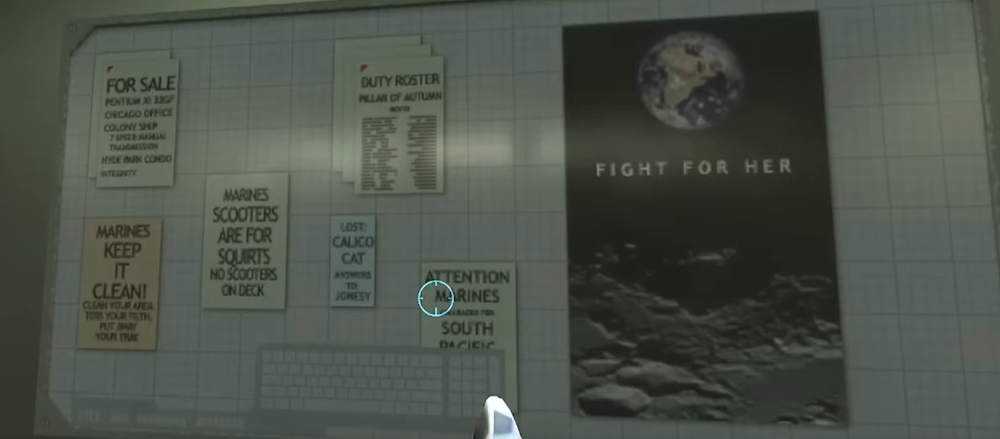

Mario
En mario bros (1980) hay atajos que pueden hacernos saltar mundos para llegar mas rapido al final (mundo 8)y aqui hay un video creditos a rehicolreplay de la recopilacion de todos los atajos de este juego
En mario bros (1980) hay atajos que pueden hacernos saltar mundos para llegar mas rapido al final (mundo 8)y aqui hay un video creditos a rehicolreplay de la recopilacion de todos los atajos de este juego
en cod mw3 (2011) en el mapa lockdown debes usar un dron de reconocimiento para acceder a un area que oculta a un osos de peluche
halo es una saga de juegos bastante popular y hay bastates referencias a la cultura popular como firmas o contenido que aunque halla sido descartado siguen existiendo modelos u objetos en los que se ocultan estos mensajes,
usualmente se mantienen por que a los desarrolladores se les olvida removerlos del todo o los dejan aproposito para que los jugadores los encuentren
.
en halo se ha referenciado a la saga de peliculas de alien, como en esta imagen en la que se menciona a un gato perdido (el cartel azul) el cual lleva el nombre de un gato que aparece en la pelicula original
